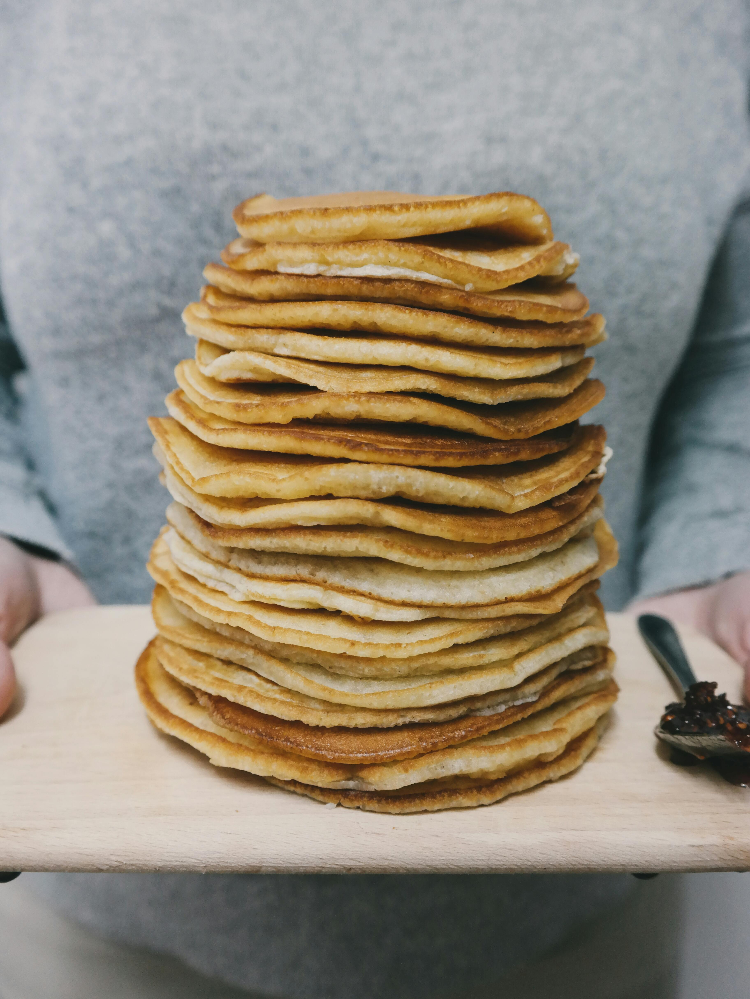

Pancakes Recipe:
Ingredients
- 1 egg
- 1 cup flour
- 2 tbsp white sugar
- 2 tsp baking powder
- 1 tsp salt
- 1 cup milk
- 2 tbsp vegetable oil
Steps
- Combine fliur, baking powder, salt, and sugar into big bowl. Make well in center, and pour milk, oil, and egg. Mix.
- Put batter on a frying pan over medium heat/ Use 1/4 cup for each pancake. Wait until bubble form and dry edges. Flip and wait until brown on other side.
- Enjoy!